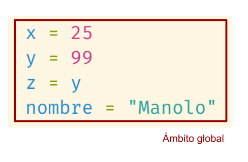
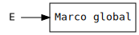
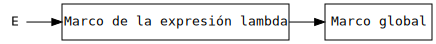
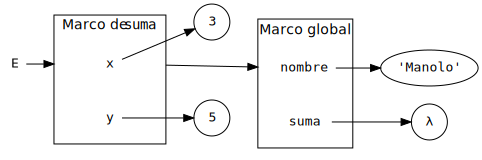

El modelo de entorno
Ricardo Pérez López
IES Doñana, curso 2025/2026
1 Ámbitos
1.1 Ámbitos léxicos
Un ámbito léxico (también llamado ámbito estático) es una porción del código fuente de un programa.
Decimos que ciertas construcciones sintácticas determinan ámbitos léxicos, o que introducen un nuevo ámbito léxico.
Cuando una construcción determina un ámbito léxico, la sintaxis del lenguaje establece dónde empieza y acaba ese ámbito léxico en el código fuente.
Por tanto, siempre se puede determinar sin ambigüedad si una instrucción situada en un punto concreto del programa está dentro de un determinado ámbito léxico, tan sólo leyendo el código fuente del programa y sin necesidad de ejecutarlo.
Eso significa que el concepto de ámbito léxico es un concepto estático.
Además de los ámbitos léxicos, existen también los llamados ámbitos dinámicos, que funcionan de otra forma y que no estudiaremos en este curso.
La mayoría de los lenguajes de programación usan ámbitos léxicos, salvo excepciones (como LISP o los shell scripts) que usan ámbitos dinámicos.
Por esa razón, a partir de ahora, cuando hablemos de «ámbitos» sin especificar de qué tipo, nos estaremos siempre refiriendo a «ámbitos léxicos».
Por ejemplo: en el lenguaje de programación Java, los bloques son estructuras sintácticas delimitadas por llaves
{y}que contienen instrucciones.Los bloques de Java determinan ámbitos léxicos; por tanto, si una instrucción está dentro de un bloque (es decir, si está situada entre las llaves
{y}que delimitan el bloque), entonces esa instrucción se encuentra dentro del ámbito léxico que define el bloque.En Python, las expresiones lambda determinan ámbitos léxicos, así que, cada vez que creamos una expresión lambda, estamos introduciendo un nuevo ámbito en el código fuente de nuestro programa.
En concreto, el ámbito que determina una expresión lambda viene delimitado por su cuerpo.
Los ámbitos se pueden anidar recursivamente, o sea, que pueden estar contenidos unos dentro de otros.
Por tanto, una instrucción puede estar en varios ámbitos al mismo tiempo (anidados unos dentro de otros).
De todos ellos, el ámbito más interno es el que no contiene, a su vez, a ningún otro ámbito.
Definimos el ámbito de una instrucción como el ámbito más interno en el que se encuentra dicha instrucción.
Según lo anterior, en un momento dado, el ámbito actual es el ámbito de la instrucción actual, es decir, el ámbito más interno en el que se encuentra la instrucción que se está ejecutando actualmente.
Decimos que los ámbitos léxicos cumplen la propiedad de la estructura.
Una estructura es una construcción sintáctica que puede anidarse completamente dentro de otras estructuras, de forma que, dadas dos estructuras cualesquiera, o una está incluida completamente dentro de la otra, o no se tocan en absoluto.
Por tanto, los bordes de dos ámbitos léxicos nunca pueden cruzarse:

1.1.1 Ámbito global
Un ámbito que siempre existe en cualquier programa es el llamado ámbito global:
Si se está ejecutando un script en el intérprete por lotes (con
python script.py), el ámbito global abarca todo el script, desde la primera instrucción hasta la última.Si estamos en el intérprete interactivo (con
pythonoipython3), el ámbito global abarca toda nuestra sesión con el intérprete, desde que arrancamos la sesión hasta que finalizamos la misma.
Por tanto:
En el momento en que se empieza a ejecutar un script o se arranca una sesión con el intérprete interactivo, se entra en el ámbito global.
Del ámbito global sólo se sale cuando se finaliza la ejecución del script o se cierra el intérprete interactivo.
Ejemplos
Por ejemplo, en la siguiente línea de código:
el cuerpo de la función
sumadetermina un ámbito.Por tanto, en el siguiente código tenemos dos ámbitos: el ámbito global (más externo) y el ámbito del cuerpo de la expresión lambda (más interno y anidado dentro del ámbito global):


En este otro ejemplo más complicado, tenemos el siguiente script:
donde existen cuatro ámbitos:


1.2 Ámbito de una instrucción y de una ligadura
El ámbito de una instrucción es el ámbito actual de esa instrucción, es decir, el ámbito más interno donde aparece esa instrucción.
El ámbito de una ligadura es el ámbito de la instrucción que, al ejecutarse, creará la ligadura (es decir, el ámbito más interno donde aparece la instrucción que, al ejecutarse, creará la ligadura en tiempo de ejecución).
Si la instrucción que crea la ligadura es una definición, hablamos de «ámbito de una definición».
Decimos que la instrucción (y la ligadura correspondiente que se creará al ejecutar esa instrucción) es local a su ámbito.
Si ese ámbito es el ámbito global, decimos que la instrucción (y la ligadura que se creará al ejecutar esa instrucción) es global.
Por ejemplo, en el siguiente script se ejecutan cuatro definiciones:

El ámbito de cada una de las instrucciones es el ámbito global, que es el único ámbito que existe en el script.
En consecuencia:
Las cuatro definiciones tienen ámbito global (y son, por tanto, definiciones globales).
Cuando se ejecuten, esas definiciones crearán ligaduras globales.
Como estamos usando un lenguaje de programación que trabaja con ámbitos léxicos, el ámbito de una instrucción siempre vendrá determinado por una construcción sintáctica del lenguaje.
Por tanto:
Sus límites vienen marcados únicamente por la sintaxis de la construcción que determina el ámbito de esa definición.
El ámbito de la instrucción se puede determinar simplemente leyendo el código fuente del programa, observando dónde empieza y dónde acaba esa construcción, sin tener que ejecutarlo.
Es decir, que se puede determinar de forma estática.
1.2.1 Visibilidad
La visibilidad de una ligadura indica en qué lugares del código fuente del programa es visible y accesible esa ligadura.
Una ligadura puede existir en un punto concreto del programa, pero en cambio no ser accesible en ese mismo punto.
Para determinar las reglas de visibilidad de una ligadura, existen dos posibilidades, dependiendo de si la ligadura está ligando un atributo de un objeto, o no.
Veamos cada caso con detalle.
Si el identificador ligado es un atributo de un objeto, la ligadura sólo será visible dentro del objeto.
En tal caso, decimos que la visibilidad de la ligadura (y del correspondiente atributo ligado) es local al objeto que contiene el atributo.
Eso significa que debemos indicar (usando el operador punto (
.)) el objeto que contiene a la ligadura para poder acceder a ella, lo que significa que también debemos tener acceso al propio objeto que la contiene.
Si el identificador ligado NO es un atributo de un objeto, la ligadura sólo será visible dentro del ámbito donde se definió la ligadura.
Ese ámbito representa una «región» cuyas fronteras limitan la porción del código fuente en la que es visible esa ligadura.
En tal caso, decimos que la visibilidad de la ligadura es local a su ámbito.
Eso significa que no es posible acceder a esa ligadura fuera de su ámbito; sólo es visible dentro de él.
En cambio, si el ámbito de la ligadura contiene dentro otro ámbito anidado, sí que podremos acceder a la ligadura dentro de ese ámbito más interno, ya que técnicamente seguiría estando dentro de su ámbito.
Si el ámbito es el global, decimos que la ligadura tiene visibilidad global.
Suponiendo que tenemos los siguientes cuatro ámbitos, identificados con las letras A, B, C y D:
Ámbitos léxicos anidados A puede ver los nombres definidos en A, pero no los definidos en B, C o D.
B puede ver los nombres definidos en A y B, pero no los definidos en C o D.
C puede ver los nombres definidos en A, B y C, pero no los definidos en D.
D puede ver los nombres definidos en A y D, pero no los definidos en B o C.
1.2.2 Tiempo de vida
El tiempo de vida de una ligadura representa el periodo de tiempo durante el cual existe esa ligadura, es decir, el periodo comprendido desde su creación y almacenamiento en la memoria hasta su posterior destrucción.
En la mayoría de los lenguajes (incluyendo Python y Java), una ligadura empieza a existir justo cuando se crea, es decir, en el punto donde se ejecuta la instrucción que define la ligadura.
Por tanto, no es posible acceder a esa ligadura antes de ese punto, ya que no existe hasta entonces.
Por otra parte, el momento en que una ligadura deja de existir depende si el identificador ligado es un atributo de un objeto, o no:
Si el identificador ligado es un atributo de un objeto, la ligadura dejará de existir cuando se elimine el objeto de la memoria, o bien, cuando se elimine el propio atributo ligado.
En caso contrario, la ligadura dejará de existir allí donde termine el ámbito de la ligadura.
Es importante hacer notar que, en un momento dado, una ligadura puede existir pero no ser visible.
Por ejemplo, si una ligadura local y una global vinculan el mismo identificador, la local «hace sombra» a la global, cosa que estudiaremos con más profundidad posteriormente.
1.2.3 Almacenamiento
Sabemos que las ligaduras se almacenan en espacios de nombres.
En Python, hay dos lugares donde se pueden almacenar ligaduras y, por tanto, hay dos posibles espacios de nombres: los objetos y los marcos.
Así que tenemos dos posibilidades:
Si el identificador que se está ligando es un atributo de un objeto, entonces la ligadura se almacenará en el objeto, junto con el propio atributo.
En caso contrario, la ligadura se almacenará en un marco, el cual depende del ámbito actual.
Veamos cada caso con más detalle.
Cuando se crea una ligadura dentro de un objeto en Python usando el operador punto (
.), el espacio de nombres será el propio objeto, ya que los objetos son espacios de nombres en Python.En tal caso, la ligadura asocia un valor con un atributo del objeto, y tanto el atributo como la ligadura se almacenan dentro del objeto.
Por ejemplo, si en Python hacemos:
estamos creando la ligadura
x→75en el espacio de nombres que representa el módulomath, el cual es un objeto en Python y, por tanto, es quien almacena la ligadura.Así que el espacio de nombres ha sido seleccionado a través del operador punto (
.) para resolver el atributo dentro del objeto, y no depende del ámbito donde se encuentre la sentenciamath.x = 75.Diremos que la ligadura es local al objeto.
Si la ligadura no se crea dentro de un objeto usando el operador punto (
.), entonces el espacio de nombres irá asociado al ámbito y, en este caso, ese espacio de nombres siempre será un marco.Ese marco será el que corresponda al ámbito actual, es decir, el ámbito más interno en el que se encuentra la instrucción que crea la ligadura.
Cuando el ámbito es el ámbito global (y, por tanto, la ligadura se almacena en el marco global), se dice que la ligadura es global.
En caso contrario, decimos que es local al ámbito, y se almacenará en el marco correspondiente a ese ámbito.
Ejemplo
En el siguiente ejemplo vemos cómo hay varias definiciones que, al ejecutarse, crearán ligaduras en un determinado ámbito, pero no en un objeto (ya que no se están creando atributos dentro de ningún objeto):
Todas esas definiciones son globales y, por tanto, las ligaduras que crean al ejecutarse son ligaduras globales o de ámbito global, y se almacenan en el marco global.
Al no tratarse de atributos de objetos, la visibilidad vendrá determinada por sus ámbitos.
En consecuencia, la visibilidad de todas esas ligaduras será el ámbito global, ya que son ligaduras globales. Por tanto, decimos que su visibilidad es global.
Por otra parte, como esas ligaduras no se crean sobre atributos de objetos, empezarán a existir justo donde se crean, y terminarán de existir al final de su ámbito.
Por ejemplo, la ligadura
y→99empezará a existir en la línea 2 y terminará al final del script, que es donde termina su ámbito (que, en este ejemplo, es el ámbito global).En consecuencia, el tiempo de vida de la ligadura será el periodo comprendido desde su creación (en la línea 2) hasta el final de su ámbito.
Cuando la ligadura se crea sobre un atributo de un objeto de Python, entonces ese objeto almacenará la ligadura y será, por tanto, su espacio de nombres.
Recordemos que, por ejemplo, cuando importamos un módulo usando la sentencia
import, podemos acceder al objeto que representa ese módulo usando su nombre, lo que nos permite acceder a sus atributos y crear otros nuevos.Esos atributos y sus ligaduras correspondientes sólo son visibles cuando accedemos a ellos usando el operador punto (
.) a través del objeto que lo contiene.Por tanto, los atributos no son visibles fuera del objeto, y debemos usar el operador punto (
.) para acceder a ellos (su visibilidad es local al objeto que los contiene).
Por ejemplo:
Igualmente, si creamos un nuevo atributo dentro del objeto, la ligadura entre el atributo y su valor sólo existirá en el propio objeto y, por tanto, sólo será visible cuando accedamos al atributo a través del objeto donde se ha creado.
Resumiendo:
Para poder acceder a un atributo de un objeto, debemos acceder primero al objeto y usar el operador punto (
.).Por tanto, la visibilidad de su ligadura correspondiente no vendrá determinada por un ámbito, sino por el objeto que contiene al atributo (y que, por consiguiente, también contiene a su ligadura).
En tal caso, diremos que la visibilidad es local al objeto que contiene el atributo.
Por otra parte, el tiempo de vida de la ligadura será el tiempo que permanezca el atributo en el objeto, ligado a algún valor.
1.2.3.1 Resumen
Ámbito (léxico):
Porción del código fuente de un programa. Los límites de ese ámbito sólo vienen determinados por la sintaxis del lenguaje, ya que ciertas construcciones sintácticas determinan su propio ámbito.
Ámbito de una instrucción:
El ámbito actual de la instrucción; es decir: el ámbito más interno donde aparece la instrucción.
Ámbito de una ligadura:
El ámbito de la instrucción que creará la ligadura en tiempo de ejecución.
Visibilidad de una ligadura:
Determina dónde es visible una ligadura dentro del programa.
Esa visibilidad depende de si el identificador ligado es un atributo de un objeto o no:
Si es un atributo de un objeto, la visibilidad lo determina el objeto que contiene la ligadura.
En caso contrario, la visibilidad lo determina el ámbito de la ligadura.
Tiempo de vida de una ligadura:
El periodo de tiempo durante el cual existe esa ligadura, es decir, el periodo comprendido desde su creación y almacenamiento en la memoria hasta su posterior destrucción.
Su tiempo de vida empieza siempre en el momento en que se crea la ligadura, y su final depende de si el identificador ligado es un atributo de un objeto o no:
Si es un atributo de un objeto, el tiempo de vida acabará cuando se destruya el objeto que lo contiene (o cuando se elimine el atributo ligado).
En caso contrario, el tiempo de vida acabará al final del ámbito de la ligadura.
Almacenamiento de una ligadura:
Determina el espacio de nombres donde se almacenará la ligadura:
Si el identificador ligado es un atributo de un objeto, el espacio de nombres será el objeto que lo contiene.
En caso contrario, el espacio de nombres será el marco asociado al ámbito de la ligadura.
1.3 Ámbito de un identificador
A veces, por economía del lenguaje, se suele hablar del «ámbito de un identificador», en lugar de hablar del «ámbito de la ligadura que liga ese identificador con un valor».
Por ejemplo, en el siguiente script:
tenemos que:
En el ámbito global, hay una definición que liga al identificador
xcon el valor25.Por tanto, se dice que el ámbito de esa ligadura es el ámbito global.
Pero también se suele decir que «el identificador
xes global» o, simplemente, que «xes global».
O sea, se asocia al ámbito no la ligadura, sino el identificador en sí.
Pero hay que tener cuidado, ya que ese mismo identificador puede aparecer en ámbitos diferentes y, por tanto, ligarse en ámbitos diferentes.
Así que no tendría sentido hablar del ámbito que tiene ese identificador (ya que podría tener varios) sino, más bien, del ámbito que tiene una aparición concreta de ese identificador.
Por eso, sólo deberíamos hablar del ámbito de un identificador cuando no haya ninguna ambigüedad respecto a qué aparición concreta nos estamos refiriendo.
Por ejemplo, en el siguiente script:
el identificador
xque aparece en la línea 1 y el identificadorxque aparece en la línea 2 pertenecen a ámbitos distintos (como veremos en breve) aunque sea el mismo identificador.
1.4 Ámbito de un parámetro
Sabemos que el cuerpo de la expresión lambda determina un ámbito.
Por ejemplo, supongamos la siguiente llamada a una expresión lambda:
Al llamar a la expresión lambda (es decir, al aplicar la expresión lambda a unos argumentos), se empieza a ejecutar su cuerpo y, por tanto, se entra en dicho ámbito.
En ese momento, se crea un nuevo marco en la memoria, que representa esa ejecución concreta de dicha expresión lambda.
Lo que ocurre justo a continuación es que cada parámetro de la expresión lambda se liga a uno de los argumentos en el orden en que aparecen en la llamada a la expresión lambda (primer parámetro con primer argumento, segundo con segundo, etcétera).
En el ejemplo anterior, es como si el intérprete ejecutara las siguientes definiciones dentro del ámbito de la expresión lambda:
Las ligaduras creadas por esas definiciones se almacenan en el marco de la llamada a la expresión lambda.
Ese marco se eliminará de la memoria al salir del ámbito de la expresión lambda, es decir, cuando se termine de ejecutar el cuerpo de la expresión lambda al finalizar la llamada a la misma.
Por tanto, las ligaduras se destruyen de la memoria al eliminarse el marco que las almacena.
La próxima vez que se llame a la expresión lambda, se volverán a ligar sus parámetros, esta vez con los argumentos que haya en esa llamada.
Por ejemplo, supongamos que tenemos esta situación:
En la primera llamada, se entrará en el ámbito determinado por el cuerpo de la expresión lambda, se creará el marco que representa a esa llamada, y se ejecutarán las siguientes definiciones dentro del ámbito:
lo que creará las correspondientes ligaduras y las almacenará en el marco de esa llamada.
Despues, evaluará el cuerpo de la expresión lambda y devolverá el resultado, saliendo del cuerpo de la expresión lambda y, por tanto, del ámbito que determina dicho cuerpo, lo que hará que se destruya el marco y, en consecuencia, las ligaduras que contiene.
En la siguiente llamada ocurrirá lo mismo pero, esta vez, las definiciones que se ejecutarán serán las siguientes:
lo que creará otras ligaduras, que serán destruidas luego cuando se destruya el marco que las contiene, al finalizar la ejecución del cuerpo de la expresión lambda.
Es importante hacer notar que en ningún momento se está haciendo un rebinding de los parámetros, ya que cada vez que se llama de nuevo a la expresión lambda, se está creando una ligadura nueva sobre un identificador que no estaba ligado.
En consecuencia, podemos decir que:
El ámbito de la ligadura entre un parámetro y su argumento es el cuerpo de la expresión lambda, así que la visibilidad del parámetro (y de la ligadura) es ese cuerpo.
Esa ligadura se crea justo después de entrar en ese ámbito, así que se puede acceder a ella en cualquier parte del cuerpo de la expresión lambda, por lo que su tiempo de vida va desde el principio hasta el final de la llamada.
El espacio de nombres que almacena las ligaduras entre parámetros y argumentos es el marco que se crea al llamar a la expresión lambda.
Esto se resume diciendo que «el ámbito de un parámetro es el cuerpo de su expresión lambda».
También se dice que el parámetro tiene un ámbito local y un almacenamiento local al cuerpo de la expresión lambda.
Resumiendo: el parámetro es local a dicha expresión lambda.
Por tanto, sólo podemos acceder al valor de un parámetro dentro del cuerpo de su expresión lambda.
Por ejemplo, en el siguiente código:
el cuerpo de la expresión lambda ligada a
sumadetermina su propio ámbito.Por tanto, en el siguiente código tenemos dos ámbitos: el ámbito global (más externo) y el ámbito del cuerpo de la expresión lambda (más interno y anidado dentro del ámbito global):

Además, cada vez que se llama a
suma, la ejecución del programa entra en su cuerpo, lo que crea un nuevo marco que almacena las ligaduras entre sus parámetros y los argumentos usados en esa llamada.
En resumen:
El ámbito de un parámetro es el ámbito de la ligadura que se establece entre éste y su argumento correspondiente, y se corresponde con el cuerpo de la expresión lambda donde aparece.
Por tanto, el parámetro sólo existe dentro del cuerpo de la expresión lambda y no podemos acceder a su valor fuera del mismo; por eso se dice que tiene un ámbito local a la expresión lambda.
Además, la ligadura entre el parámetro y su argumento se almacena en el marco de la llamada a la expresión lambda, y por eso se dice que tiene un almacenamiento local a la expresión lambda.
Los ámbitos léxicos permiten ligaduras locales a ciertas construcciones sintácticas, lo cual nos permite programar definiendo partes suficientemente independientes entre sí.
Esto es la base de la llamada programación modular.
Por ejemplo, nos permite crear funciones sin preocuparnos de si los nombres de los parámetros ya han sido utilizados en otras partes del programa.
Igualmente, nos permite crear programas sin preocuparnos de si estamos usando nombres que ya han sido usados en el interior de alguna de las funciones del programa.
De lo contrario, se podría provocar lo que se conoce como name clash (conflicto de nombres o choque de nombres), que es el problema que se produce cuando usamos el mismo nombre para varias cosas diferentes y que impide que se puedan usar todas al mismo tiempo.
Lo que impide el name clash son dos cosas:
Los ámbitos hacen que los nombres sólo sean visibles en ciertas zonas.
Los espacios de nombres permiten que un mismo nombre pueda ligarse a diferentes nombres simultáneamente.
1.5 Ámbito de un identificador cuantificado
Hemos visto que a los parámetros de una expresión lambda se les llama identificadores cuantificados cuando aparecen dentro del cuerpo de dicha expresión lambda.
Por tanto, todo lo que se dijo sobre el ámbito de un parámetro se aplica exactamente igual al ámbito de un identificador cuantificado.
Recordemos que el ámbito de un parámetro es el cuerpo de su expresión lambda, que es la porción de código donde podemos acceder al valor del argumento con el que está ligado.
Por tanto, el ámbito de un identificador cuantificado es el cuerpo de la expresión lambda donde aparece, y es el único lugar dentro del cual podremos acceder al valor del identificador cuantificado (que también será el valor del argumento con el que está ligada).
Por eso también se dice que el identificador cuantificado tiene un ámbito local al cuerpo de la expresión lambda.
En resumen:
El ámbito de un identificador cuantificado es el ámbito de la ligadura que se crea entre ésto y su argumento correspondiente, y se corresponde con el cuerpo de la expresión lambda donde aparece.
Por tanto, el identificador cuantificado sólo existe dentro del cuerpo de la expresión lambda y no podemos acceder a su valor fuera del mismo; por eso se dice que tiene un ámbito local a la expresión lambda.
Además, la ligadura entre el identificador cuantificado y su argumento se almacena en el marco de la llamada a la expresión lambda, y por eso se dice que tiene un almacenamiento local a la expresión lambda.
- O sea: con los identificadores cuantificados ocurre exactamente lo mismo que con los parámetros, ya que, de hecho, un parámetro y un identificador cuantificado son la misma cosa, como ya hemos visto.
Ejemplo
En el siguiente script:
Hay dos ámbitos: el ámbito global y el ámbito local definido por el cuerpo de la expresión lambda (o sea, la expresión
x * x).Esa expresión lambda tiene un parámetro (
x) que aparece como el identificador cuantificadoxen el cuerpo de la expresión lambda.El ámbito del parámetro
x(o, lo que es lo mismo, el identificador cuantificadox) es el cuerpo de la expresión lambda.Por tanto, fuera de ese cuerpo, no es posible acceder al valor del identificador cuantificado
x, al encontrarnos fuera de su ámbito (la ligadura sólo es visible dentro del cuerpo de la expresión lambda).Por eso, la línea 4 dará un error al intentar acceder al valor
x, cuya ligadura no es visible fuera de la expresión lambda.
1.6 Ámbito de un identificador libre
Los identificadores y ligaduras que no tienen ámbito local se dice que tienen un ámbito no local o, a veces, un ámbito más global.
Si, además, ese ámbito resulta ser el ámbito global, decimos directamente que esos identificadores o ligaduras son globales.
Por ejemplo, los identificadores libres que aparecen en una expresión lambda no son locales a dicha expresión (ya que no representan parámetros de la expresión) y, por tanto:
Tienen un ámbito más global que el cuerpo de dicha expresión lambda.
Se almacenarán en otro espacio de nombres distinto al marco que se crea al llamar a la expresión lambda.
2 Entorno
2.1 Definición
El entorno (del inglés, environment) es una extensión del concepto de marco, usado por los lenguajes interpretados en la resolución de identificadores, ya que:
El entorno nos da acceso a todas las ligaduras (almacenadas en marcos, es decir, no de atributos de objetos) que son visibles en un momento concreto de la ejecución de un programa interpretado.
El intérprete usa el entorno para resolver los identificadores que se encuentran ligados mediante ligaduras cuya visibilidad depende de un ámbito y que estén, por tanto, almacenadas en un marco.
Por tanto, no lo usa para resolver los identificadores asociados a atributos de objetos.
Durante la ejecución del programa, se van creando y destruyendo marcos a medida que se van entrando y saliendo de ciertos ámbitos; en concreto, a medida que se van ejecutando scripts, funciones o métodos.
Asimismo, en esos marcos se van almacenando ligaduras.
Según se van creando en memoria, esos marcos van enlazándose unos con otros creando una secuencia de marcos que se denomina entorno (del inglés, environment).
En un momento dado, el entorno contendrá más o menos marcos dependiendo de por dónde haya pasado la ejecución del programa hasta ese momento.
El entorno, por tanto, es un concepto dinámico que depende del momento en el que se calcule, es decir, de por dónde va la ejecución del programa.
Por tanto, el entorno depende de qué partes del programa se han ido ejecutando hasta llegar a la instrucción actual.
El entorno siempre contendrá, al menos, un marco: el marco global, que siempre será el último de la secuencia de marcos que forman el entorno.
Asimismo, el primer marco del entorno se denomina el marco actual.
Si el marco global es el único que existe, entonces el marco actual será el marco global.
Gráficamente, representaremos los entornos como una lista enlazada de marcos conectados entre sí formando secuencias, de manera que:
Usaremos la letra E como un indicador que siempre apunta al primer marco de la lista.
Ese primer marco es el marco actual.
El último marco siempre será el marco global.

Si sólo hay un marco en el entorno, ése será necesariamente el marco global, el cual será también al mismo tiempo el marco actual:


Por ejemplo:
Cuando entramos a ejecutar un script, se crea su marco global.
Si dentro de ese script llamamos a una expresión lambda, se creará un marco para esa ejecución concreta de la expresión lambda, por lo que en ese caso habrá dos marcos en la memoria: el global y el de esa llamada a la expresión lambda.
El marco de la expresión lambda será el marco actual, que será el primer marco del entorno y apuntará a su vez al marco global.

El marco de la expresión lambda se eliminará de la memoria cuando termine esa ejecución de la expresión lambda.
A su vez, el marco global sólo se eliminará de la memoria cuando se finalice la ejecución del script.
2.2 Ámbitos, marcos y entornos
Hagamos un resumen rápido de todo lo visto hasta ahora.
El entorno contiene todas las ligaduras visibles en un punto concreto de la ejecución del programa interpretado, siempre que sean ligaduras cuya visibilidad dependa de un ámbito y estén, por tanto, almacenadas en un marco (o sea, no es el caso de los atributos de objetos).
Un marco contiene un conjunto de ligaduras (ya que es un espacio de nombres), y un entorno es una secuencia de marcos.
Los marcos se van creando y destruyendo a medida que se van ejecutando y terminando de ejecutar ciertas partes del programa: scripts, funciones o métodos (que son un caso particular de función).
Una expresión lambda también es una función.
Cuando se llama a una función, se crea un nuevo marco que contiene las ligaduras que ligan a los parámetros con los valores de esos argumentos.
El cuerpo de una expresión lambda determina su propio ámbito, de forma que las ligaduras que ligan a los parámetros con los argumentos se crean dentro de ese ámbito y son, por tanto, locales a ese ámbito.
Es decir: los parámetros (y las ligaduras entre los parámetros y los argumentos) tienen un ámbito local al cuerpo de la expresión lambda y sólo son visibles dentro de él.
Además, esas ligaduras tienen un almacenamiento local al marco que se crea al llamar a la expresión lambda.
Ese marco y ese ámbito van ligados:
Cuando se empieza a ejecutar el cuerpo de la expresión lambda, se entra en el ámbito y, por tanto, se crea el marco en la memoria.
Cuando se termina de ejecutar el cuerpo de la expresión lambda, se sale del ámbito y, por tanto, se elimina el marco de la memoria.
Todo marco lleva asociado un ámbito (lo contrario no siempre es cierto).
Cuando se crea el nuevo marco, éste se enlaza con el marco que hasta ese momento había sido el marco actual, en cadena.
El último marco de la cadena es siempre el marco global.
Se va formando así una secuencia de marcos que representa el entorno del programa allí donde se está ejecutando la instrucción actual.
Así que no tendremos un único marco (el marco global) sino que tendremos, además, al menos uno más cada vez que se llame a una expresión lambda y mientras dure la ejecución de la misma.
El ámbito es un concepto estático: es algo que existe y se reconoce simplemente leyendo el código del programa, sin tener que ejecutarlo.
El marco es un concepto dinámico: es algo que se crea y se destruye a medida que se van ejecutando y terminando de ejecutar ciertas partes del programa: scripts, funciones y métodos.
Un marco se crea cuando se entra en el ámbito de un script, función o método, y se destruye cuando se sale de ese ámbito.
Por ejemplo, en el siguiente código:
el cuerpo de la función
sumadetermina un ámbito.Por tanto, en el siguiente código tenemos dos ámbitos: el ámbito global (más externo) y el ámbito del cuerpo de la expresión lambda (más interno y anidado dentro del ámbito global):

Además, cada vez que se llama a
suma, la ejecución del programa entra en su cuerpo, lo que crea un nuevo marco que almacena las ligaduras entre sus parámetros y los argumentos usados en esa llamada.
El concepto de entorno refleja el hecho de que los ámbitos se contienen unos a otros (están anidados unos dentro de otros).
Si un marco A apunta a un marco B en el entorno, significa que el ámbito de A está contenido en el ámbito de B.
El primer marco en la cadena del entorno siempre será el último marco que se ha creado y que todavía no se ha destruido.
Ese marco es el marco actual, y se corresponde con el ámbito actual, es decir, con el ámbito más interno de la instrucción actual.
Por otra parte, el último marco del entorno siempre es el marco global.
Por ejemplo, si en cierto momento de la ejecución del programa anterior tenemos el siguiente entorno:

Podemos afirmar que:
El marco de la función
sumaapunta al marco global en el entorno.El ámbito de la expresión lambda a la que está ligado
sumaestá contenido en el ámbito global.El marco actual es el marco de la expresión lambda.
Por tanto, el programa se encuentra actualmente ejecutando el cuerpo de la expresión lambda.
De hecho, está ejecutando la llamada
suma(3, 5).
3 Evaluación con entornos
3.1 Evaluación de expresiones con entornos
Al evaluar una expresión, el intérprete buscará en el entorno el valor al que está ligado cada identificador que aparezca en la expresión.
Para ello, el intérprete buscará en el primer marco del entorno (el marco actual) una ligadura para ese identificador y, si no la encuentra, irá pasando por toda la secuencia de marcos hasta encontrarla.
Si no aparece en ningún marco, querrá decir que:
o bien el identificador no está ligado (porque aún no se ha creado la ligadura),
o bien su ligadura está fuera del entorno y por tanto no es visible actualmente (al encontrarse en otro ámbito inaccesible desde el ámbito actual).
En cualquiera de estos casos, generará un error de tipo
NameError(«nombre no definido»).
Por ejemplo:
A medida que vamos ejecutando cada línea del código, tendríamos los siguientes entornos:


3.2 Evaluación de expresiones lambda con entornos
Para que una expresión lambda funcione, todos los identificadores que aparezcan en el cuerpo deben estar ligados a algún valor en el entorno en el momento de evaluar la aplicación de la expresión lambda sobre unos argumentos.
Por ejemplo:
>>> prueba = lambda x, y: x + y + z # aquí no da error >>> prueba(4, 3) # aquí sí Traceback (most recent call last): File "<stdin>", line 1, in <module> File "<stdin>", line 1, in <lambda> NameError: name 'z' is not definedda error porque
zno está definido (no está ligado a ningún valor en el entorno) en el momento de llamar apruebaen la línea 2.
En cambio:
sí funciona (y devuelve
16) porque, en el momento de evaluar la aplicación de la expresión lambda (en la línea 3), el identificadorzestá ligado a un valor en el entorno (en este caso,9).Observar que no es necesario que los identificadores que aparecen en el cuerpo estén ligados en el entorno cuando se crea la expresión lambda, sino cuando se evalúa el cuerpo de la expresión lambda, o sea, cuando se llama a la expresión lambda.
Ejemplo
En el siguiente script:
existen cuatro ámbitos:

- Su ejecución, línea a línea, produce los siguientes entornos:


3.2.1 Ligaduras sombreadas
Recordemos que la resolución de identificadores es el proceso por el cual el compilador o el intérprete determinan qué ligadura se corresponde con una aparición concreta de un determinado identificador.
¿Qué ocurre cuando una expresión lambda contiene como parámetros algunos identificadores que ya están ligados en el entorno, en un espacio de nombres asociado a un ámbito más global?
Por ejemplo:
¿Cómo resuelve el intérprete de Python las distintas
xque aparecen en el código? ¿Son la mismax? ¿Se corresponden con la misma ligadura? ¿Están todas esasxligadas al mismo valor?
La
xque aparece en la línea 1 es distinta a las que aparecen en la 2:La
xde la línea 1 es un identificador ligado a un valor en el ámbito global (el ámbito de esa ligadura es el ámbito global). Esa ligadura, se almacena en el marco global, y por eso decimos que esaxes global.Por tanto, la aparición de la
xen la línea 1 representa a laxcuya ligadura se encuentra almacenada en el marco global (es decir, laxglobal) y que está ligada al valor4.Las
xde la línea 2 representan al parámetro de la expresión lambda. Ese parámetro está ligado al argumento de la llamada, el ámbito de esa ligadura es el cuerpo de la expresión lambda y esa ligadura se almacena en el marco de la llamada a la expresión lambda.En consecuencia, las apariciones de la
xen la línea 2 representan a laxlocal a la expresión lambda, cuya ligadura se encuentra almacenada en el marco de la llamada a la expresión lambda y que está ligada a3.
Por tanto, la
xque aparece en el cuerpo de la expresión lambda no se refiere al identificadorxque está fuera de la expresión lambda (y que aquí está ligado al valor4), sino al parámetroxque, en la llamada de la línea 2, está ligado al valor3(el argumento de la llamada).Es decir:
Dentro del cuerpo de la expresión lambda,
xvale3.Fuera del cuerpo de la expresión lambda,
xvale4.
Para determinar cuánto vale cada aparición de la
xen ese código (es decir, para resolver la aparición de cadax), el intérprete de Python consulta el entorno.
La
xque está en la línea 1 y lasxque están en la línea 2 son apariciones distintas que se corresponden con ligaduras distintas que tienen ámbitos distintos y se almacenan en espacios de nombres distintos.Por tanto, el identificador
xpodrá tener valores distintos dependiendo de qué aparición concreta de laxestamos evaluando.Cuando un mismo identificador está ligado dos veces en dos ámbitos anidados uno dentro del otro, decimos que:
El identificador que aparece en el ámbito más externo está sombreado (y su ligadura está sombreada) por el del ámbito más interno.
El identificador que aparece en el ámbito más interno hace sombra al identificador sombreado (y también se dice que su ligadura hace sombra a la ligadura sombreada) que aparece en el ámbito más externo.
En nuestro ejemplo, podemos decir que el parámetro
xde la expresión lambda hace sombra al identificadorxque aparece en el ámbito global.Eso significa que no podemos acceder a ese identificador
xglobal desde dentro del cuerpo de la expresión lambda, porque laxdentro del cuerpo siempre se referirá a laxlocal (el parámetro de la expresión lambda).Esto ocurre así porque, al buscar un valor para
x, la primera ligadura que se encuentra el intérprete para el identificadorxal recorrer la secuencia de marcos del entorno, es precisamente la que está en el marco de la expresión lambda, que es el marco actual cuando se está ejecutando su cuerpo.

Si desde dentro de la expresión lambda necesitáramos acceder al valor de la
xque está fuera de ese expresión lambda, lo que podríamos hacer es cambiarle el nombre al parámetrox. Por ejemplo:Así, en la expresión lambda tendríamos el parámetro
wy el identificador librex, éste último ligado en el ámbito global, y a cuyo valor ahora sí podemos acceder al no estar sombreado y encontrarse dentro del entorno.
3.2.2 Renombrado de parámetros
Los parámetros se pueden renombrar sin que se altere el significado de la expresión lambda, siempre que ese renombrado se haga de forma adecuada.
A esta operación se la denomina α-conversión.
Un ejemplo de α-conversión es la que hicimos antes.
La α-conversión hay que hacerla correctamente para evitar efectos indeseados. Por ejemplo, en:
si renombramos
xaztendríamos:lo que es claramente incorrecto. A este fenómeno indeseable se le denomina captura de identificadores.
3.2.3 Visualización en Pythontutor
Pythontutor es una herramienta online muy interesante y práctica que nos permite ejecutar un script paso a paso y visualizar sus efectos.
Muestra la pila de control, los marcos dentro de ésta, las ligaduras dentro de éstos y los datos almacenados en el montículo.
Entrando en http://pythontutor.com/visualize.html se abre un área de texto donde se puede teclear (o copiar y pegar) el código fuente del script a ejecutar.
Pulsando en «Visualize Execution» se pone en marcha, pudiendo ejecutar todo el script de una vez o hacerlo paso a paso.
Conviene elegir las siguientes opciones:
Hide exited frames (default)
Render all objects on the heap (Python/Java)
Draw pointers as arrows (default)
Ejercicio
En el script anterior:
indicar:
- Los identificadores.
- Los ámbitos.
- Los entornos, marcos y ligaduras en cada línea de código.
- Los ámbitos de cada ligadura.
- La visibilidad de cada ligadura.
- El tiempo de vida de cada ligadura.
- El almacenamiento de cada ligadura.
- Los ámbitos de cada aparición de cada identificador.
- Las ligaduras sombreadas y los identificadores sombreados.
- Los identificadores y ligaduras que hacen sombra.
3.3 Resolución de atributos de objetos
Ya estudiamos que el acceso a un atributo de un objeto suponía buscar la correspondiente ligadura únicamente en el espacio de nombres asociado a ese objeto, y no en ningún otro.
Por tanto, dicha resolución requiere de un mecanismo algo distinto a lo visto hasta ahora, ya que las ligaduras que ligan el nombre del atributo con su valor se almacenan en el propio objeto, no en un marco.
En consecuencia, el acceso a un atributo de un objeto usando el operador punto (
.), como en la expresiónmath.pide este ejemplo:no requiere usar el entorno.
De hecho, el lenguaje ni siquiera tiene por qué tener entornos. Recordemos que los lenguajes compilados no usan entornos para resolver identificadores y pueden resolver perfectamente los atributos de los objetos.
Concretamente, resolver el identificador
pien la expresiónmath.pirequerirá de los siguientes pasos:Se busca el valor de
mathen el entorno, que devuelve el objeto que representa al módulomath.Una vez que sabemos que el operando izquierdo del operador punto (
.) es un objeto, procedemos a resolver el identificadorpi, pero para ello sólo se considera el espacio de nombres asociado al objetomath.Es decir: buscamos el valor de
pien el espacio de nombres demath, y sólo ahí.Una vez localizado, se devolverá el valor ligado al nombre
pien el espacio de nombres demath, o se lanzará un errorNameErroren caso de que no haya ninguna ligadura parapienmath.
Como se puede observar, en ningún momento se usa el entorno para resolver el identificador
pidentro demath.
4 La pila de control
4.1 La pila de control
La pila de control es una estructura de datos que utiliza el intérprete para llevar la cuenta de las ejecuciones activas que hay en un determinado momento de la ejecución del programa.
Las ejecuciones activas son aquellas llamadas a funciones (o ejecuciones de scripts) que aún no han terminado de ejecutarse.
La pila de control es, básicamente, un almacén de marcos.
El marco que hay en el fondo de la pila siempre es el marco global y se corresponde con el espacio de nombres del script actual.
Cada vez que se hace una nueva llamada a una función:
la ejecución actual se detiene,
el marco correspondiente a esa llamada se almacena en la cima de la pila sobre los demás marcos que pudiera haber y
se continúa la ejecución en la función llamada.
Ese marco representa por dónde va la ejecución del programa en este momento.
Según ésto, si un marco A está justo debajo de otro marco B, es porque el código correspondiente a A está esperando a que termine el código correspondiente a B (normalmente, una función).
Ese marco además es el primero de la secuencia de marcos que forman el entorno de la función, que también estarán almacenados en la pila, más abajo.
Los marcos se enlazan entre sí para representar los entornos que actúan en las distintas llamadas activas.
El intérprete almacena en el marco cualquier información que necesite para gestionar las llamadas a funciones, incluyendo:
Las ligaduras entre los parámetros y sus valores (por supuesto).
La ligadura que apunta al valor de retorno de la función.
Cuál es el siguiente marco que le sigue en el entorno.
El punto de retorno, dentro del programa, al que debe devolverse el control cuando finalice la ejecución de la función.
Un marco almacenado en la pila también se denomina registro de activación. Por tanto, también podemos decir que la pila de control almacena registros de activación.
Cada llamada activa está representada por su correspondiente marco en la pila.
En cuanto la llamada finaliza, su marco se saca de la pila y se transfiere el control a la llamada que está inmediatamente debajo (si es que hay alguna).
Ejemplos
Del análisis del diagrama del ejemplo anterior se pueden deducir las siguientes conclusiones:
En un momento dado, dentro del ámbito global se ha llamado a la función
uno, la cual ha llamado a la funcióndos, la cual ha llamado a la funcióntres, la cual aún no ha terminado de ejecutarse.El entorno en la función
unoempieza por el marco deuno, el cual apunta al marco global.El entorno en la función
dosempieza por el marco dedos, el cual apunta al marco global.El entorno en la función
tresempieza por el marco detres, el cual apunta al marco global.
Si tenemos ámbitos anidados, los marcos se apuntarán entre sí en el entorno. Por ejemplo:

dos activadaHemos dicho que habrá un marco por cada nueva llamada que se realice a una función, y que ese marco se mantendrá en la pila hasta que la llamada finalice.
Por tanto, en el caso de una función recursiva, tendremos un marco por cada llamada recursiva.

fact(4)Los traductores que optimizan la recursividad final lo que hacen es sustituir cada llamada recursiva por la nueva llamada recursiva a la misma función.
De esta forma, el marco que genera cada nueva llamada recursiva no se apila sobre los marcos anteriores en la pila, sino que sustituye al marco de la llamada que la ha llamado a ella.
Por ejemplo, en el siguiente caso:
fact_iter(4, 5)llama afact_iter(3, 20)y devuelve directamente el resultado de ésta.Es decir:
fact_iter(4, 5) == fact_iter(3, 20), así que hacerfact_iter(4, 5)es lo mismo que hacerfact_iter(3, 20).Por tanto, la llamada a
fact_iter(4, 5)se puede sustituir por la llamada afact_iter(3, 20).Un intérprete que optimiza la recursividad final no apilaría el marco de la segunda llamada sobre el marco de la primera, sino que el marco de la segunda sustituiría al marco de la primera dentro de la pila.
Así se haría también con las demás llamadas recursivas a
fact_iter(2, 60),fact_iter(1, 120)yfact_iter(0, 120).De este modo, la pila no crecería con cada nueva llamada recursiva.
5 Estrategias de evaluación
5.1 Estrategias de evaluación
A la hora de evaluar una expresión (cualquier expresión) existen varias estrategias diferentes que se pueden adoptar.
Cada lenguaje implementa sus propias estrategias de evaluación que están basadas en las que vamos a ver aquí.
Básicamente se trata de decidir, en cada paso de reducción, qué subexpresión hay que reducir, en función de:
El orden de evaluación:
De fuera adentro o de dentro afuera.
De izquierda a derecha o de derecha a izquierda.
La necesidad o no de evaluar dicha subexpresión.
5.1.1 Orden de evaluación
En un lenguaje de programación funcional puro se cumple la transparencia referencial, según la cual el valor de una expresión depende sólo del valor de sus subexpresiones (también llamadas redexes, del inglés, reducible expression).
Pero eso también implica que no importa el orden en el que se evalúen las subexpresiones: el resultado debe ser siempre el mismo.
Gracias a ello podemos usar nuestro modelo de sustitución como modelo computacional.
Hay dos estrategias básicas de evaluación:
Orden aplicativo: reducir siempre el redex más interno (y más a la izquierda).
Orden normal: reducir siempre el redex más externo (y más a la izquierda).
Python usa el orden aplicativo, salvo excepciones.
5.1.1.1 Orden aplicativo
El orden aplicativo consiste en evaluar las expresiones de dentro afuera, es decir, empezando por el redex más interno y a la izquierda.
El redex más interno es el que no contiene a otros redexes. Si existe más de uno que cumpla esa condición, se elige el que está más a la izquierda.
Eso implica que los operandos y los argumentos se evalúan antes que los operadores y las aplicaciones de funciones.
Corresponde a lo que en muchos lenguajes de programación se denomina paso de argumentos por valor (call-by-value).
Por ejemplo, si tenemos la siguiente función:
según el orden aplicativo, la expresión
cuadrado(3 + 4)se reduce así:
5.1.1.2 Orden normal
El orden normal consiste en evaluar las expresiones de fuera adentro, es decir, empezando siempre por el redex más externo y a la izquierda.
El redex más externo es el que no está contenido en otros redexes. Si existe más de uno que cumpla esa condición, se elige el que está más a la izquierda.
Eso implica que los operandos y los argumentos se evalúan después de las aplicaciones de los operadores y las funciones.
Por tanto, los argumentos que se pasan a las funciones lo hacen sin evaluarse previamente.
Corresponde a lo que en muchos lenguajes de programación se denomina paso de argumentos por nombre (call-by-name).
Por ejemplo, si tenemos la siguiente función:
según el orden normal, la expresión
cuadrado(3 + 4)se reduce así:cuadrado(3 + 4) # definición de cuadrado = (lambda x: x * x)(3 + 4) # aplicación a (3 + 4) = ((3 + 4) * (3 + 4)) # evalúa 3 y devuelve 3 = ((3 + 4) * (3 + 4)) # evalúa 4 y devuelve 4 = ((3 + 4) * (3 + 4)) # evalúa (3 + 4) y devuelve 7 = 7 * (3 + 4) # evalúa 3 y devuelve 3 = 7 * (3 + 4) # evalúa 4 y devuelve 4 = 7 * (3 + 4) # evalúa (3 + 4) y devuelve 7 = 7 * 7 # evalúa 7 * 7 y devuelve 49 = 49
5.1.2 Evaluación estricta y no estricta
Existe otra forma de ver la evaluación de una expresión:
Evaluación estricta o impaciente: Reducir todos los redexes aunque no hagan falta para calcular el valor de la expresión.
Evaluación no estricta o perezosa: Reducir sólo los redexes que sean estrictamente necesarios para calcular el valor de la expresión.
Ejemplo
Sabemos que la expresión
1 / 0da un error de división por cero:Supongamos que tenemos la siguiente definición:
de forma que
primeroes una función que simplemente devuelve el primero de sus argumentos.Es evidente que la función
primerono necesita evaluar nunca su segundo argumento, ya que no lo utiliza (simplemente devuelve el primero de ellos). Por ejemplo,primero(4, 3)devuelve4.
Sabiendo eso… ¿qué valor devolvería la siguiente expresión?
Curiosamente, el resultado dependerá de si la evaluación es estricta o perezosa:
Si es estricta, el intérprete evaluará todos los argumentos de la expresión lambda aunque no se utilicen luego en su cuerpo. Por tanto, al evaluar
1 / 0devolverá un error.Es lo que ocurre cuando se evalúa siguiendo el orden aplicativo.
En cambio, si es perezosa, el intérprete evaluará únicamente aquellos argumentos que se usen en el cuerpo de la expresión lambda, y en este caso sólo se usa el primero, así que dejará sin evaluar el segundo, no dará error y devolverá directamente
4.Es lo que ocurre cuando se evalúa siguiendo el orden normal:
Hay un resultado teórico que avala lo que acabamos de observar:
Teorema de estandarización:
Si una expresión tiene forma normal, el orden normal de evaluación conduce seguro a la misma.
En cambio, el orden aplicativo es posible que no encuentre la forma normal de la expresión.
En Python la evaluación es estricta, salvo algunas excepciones:
El operador ternario:
⟨expr_condicional⟩ ::= ⟨valor_si_cierto⟩if⟨condición⟩else⟨valor_si_falso⟩evalúa perezosamente ⟨valor_si_cierto⟩ y ⟨valor_si_falso⟩ dependiendo del valor de la ⟨condición⟩.
Los operadores lógicos
andyortambién son perezosos (se dice que evalúan en cortocircuito):True or\;\underline{x}siempre es igual a
True, valga lo que valga \underline{x}.False and\;\underline{x}siempre es igual a
False, valga lo que valga \underline{x}.
En ambos casos no es necesario evaluar \underline{x}.
En Java también existe un operador ternario (
?:) y unos operadores lógicos (||y&&) que se evalúan de igual forma que en Python.
La mayoría de los lenguajes de programación usan evaluación estricta y paso de argumentos por valor (siguen el orden aplicativo).
Haskell, por ejemplo, es un lenguaje funcional puro que usa evaluación perezosa y sigue el orden normal.
La evaluación perezosa en Haskell permite resultados muy interesantes, como la posibilidad de manipular estructuras de datos infinitas.